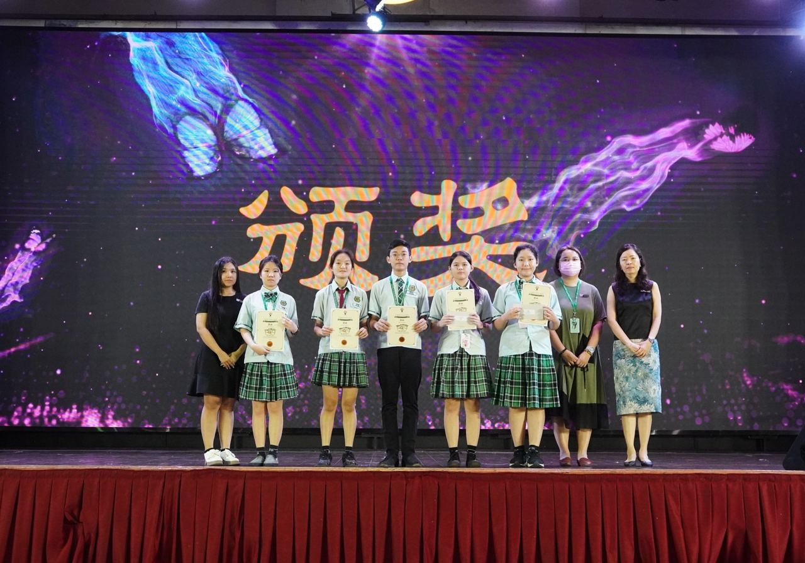

全国谢师恩征文比赛
全国谢师恩征文比赛
南华独中学生获佳绩
曼绒南华独中学生于近日举办的"第一届谢师恩征文比赛"中表现出色，共有五名学生获奖，为校争光。这项由MSEF社企主办的面向全国独中在籍学生的全国性征文比赛，旨在鼓励独中学生通过文字表达对老师的感恩之情。
在高中组诗歌类别中，本校高二文商1班的池凯萱同学荣获第二名，而高三理班的聂嘉慧同学和高二文商1班的董锦利同学则获得优秀奖。
初中组散文/小品类别中，初一忠班的陈妤菡同学和初三忠班的林纾妤同学也双双获得优秀奖。
曼绒南华独中校长陈丽冰博士对学生们的表现表示欣慰并感谢老师们辛勤培养学生的创作能力。
华文科主任廖丽华老师也对学生们佳绩表示欣慰："这次比赛的主题'生命的回响：一棵树、一朵云、一个灵魂的感恩故事'颇具挑战性，然而学生能够用优美的文字表达对老师的感激之情，这不仅反映了他们扎实的中文基础，也体现了他们敏锐的观察力和深厚的情感。"廖主任同时劝勉学生应时刻保持谦虚谨慎，戒骄戒躁的心态，追求更高的成就。
